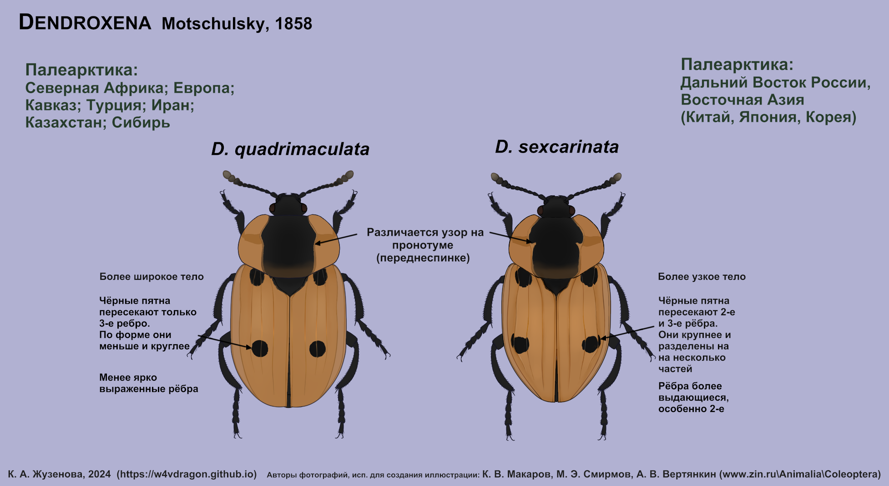

W4V
Определители
Мои иллюстрации для определения видов растений и животных
Разрешается использование в некоммерческих целях.
Род Dendroxena
Для создании иллюстраций были использованы фотографии К. В. Макарова, М. Э. Смирнова и А. В. Вертянкина с сайта "Жуки и колеоптерологи".
